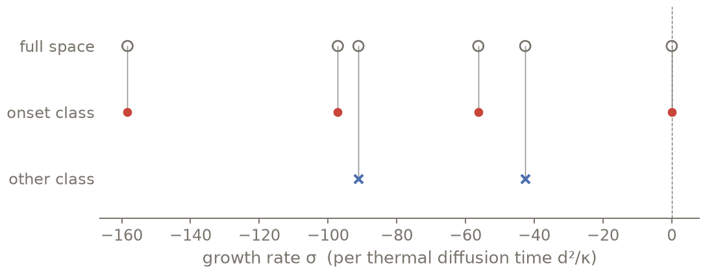

Symmetries and symmetry subspaces¶
Goal. Compute the Rayleigh–Bénard onset mode in the subspace of solutions symmetric about
mid-depth, with half the unknowns, and see what the subspace hides.
Expected. At \((Ra_c, k_c) = (1707.762, 3.1163)\) (Reid & Harris 1958; Chandrasekhar 1961) the
leading growth rate is zero within the rounding of the published values; the subspace gives the same eigenvalue to
rounding with half the unknowns. The complementary class decays.
Time: a few seconds of CPU.
Script: t03_symmetries.py · Tests behind it:
tests/evp/test_rayleigh_benard.py.
The idea¶
You declare the symmetry: a group (here the reflection \(z \to -z\)) and the parity of each field. Conatus then
checks that each equation is equivariant and refuses otherwise, naming the offending term;
builds bases of the invariant subspace (even or odd Chebyshev polynomials, cosines or sines) and drops the boundary conditions that became mirror images of each other;
solves only there, on CPU or GPU.
For a vector field you declare only the “scalar” parity: under a reflection the component along the
reflected direction changes sign, the others do not (du=ODD means \(u_x\) odd, \(u_z\) even).
The problem¶
The Boussinesq equations of A first initial-value problem: Rayleigh–Bénard 2D, CPU then GPU, written as on paper, on one wavelength \(2\pi/k_c\), and their linearization about the conduction state \(T_0 = -z\):
import time
import numpy as np
import conatus as cn
from conatus.expert import (EVEN, ODD, Reflection, SymmetryBreakingError, SymmetrySubspace,
discretize, eigenvalues, linearize)
RA_C, K_C = 1707.762, 3.1163 # Reid & Harris (1958)
box = cn.Box(x=cn.periodic(2 * np.pi / K_C), z=cn.walls(-0.5, 0.5)) # one wavelength at k_c
m = cn.Model(box, name="Boussinesq RB", Ra=RA_C, Pr=1)
u, p, T = m.velocity("u"), m.pressure("p"), m.scalar("T")
m.equations("""
momentum: dt(u) + grad(p) - Pr*lap(u) = Pr*Ra*T*ez - u·grad(u)
continuity: div(u) = 0
heat: dt(T) - lap(T) = -u·grad(T)
""")
m.at("bottom", u=0, T=+0.5) # rigid plates, fixed temperatures
m.at("top", u=0, T=-0.5)
onset_evp = m.linearize(about={u: 0, T: lambda z: -z}) # conduction state T0 = -z
The full space first¶
discretize(32, k=K_C) takes 32 modes across the layer and the smallest Fourier size that holds
\(k_c\); the eigenvalues of that wavenumber come with their residuals:
plan = onset_evp.discretize(32, k=K_C) # N = 32 across the layer, the Fourier size holds k_c
group = onset_evp.group(plan, K_C)
t0 = time.perf_counter()
res = eigenvalues(plan, group)
wall_full = time.perf_counter() - t0
i = int(res.values.real.argmax())
sf, nf = res.values[i], plan.matrices(group).L.shape[0]
print(f" full space: leading sigma = {sf.real:+.4e} n = {nf:3d} QZ {1e3 * wall_full:5.1f} ms "
f"residual {res.residuals[i]:.1e}")
Two symmetry classes¶
This step uses the expert layer, because the native layer has no symmetry= option yet: the
subspace is declared on the compiled perturbation problem, and the boundary unknowns that the native
layer created (tau_u1, tau_T1, …, listed by m.explain()) need their parities written out
like the physical fields.
evp, ncc, comp = onset_evp.compile({"x": 4, "z": 32}) # the compiled problem (expert objects)
print("unknowns of the perturbation problem:", ", ".join(v.name for v in evp.variables))
Rz = Reflection(comp.coordsys["z"], about=0) # z -> -z about mid-depth
# Perturbation unknowns carry the prefix d. Only the "scalar" parity is declared for a vector:
# du=ODD means u_x odd and u_z even (the component along z flips sign under the reflection).
# The boundary unknowns tau_* were created by the native layer (listed by m.explain()); their
# parities follow from the walls they enforce and are declared too.
onset = SymmetrySubspace(Rz, du=ODD, dT=EVEN, dp=ODD, T0=ODD, # w, T even: the onset roll
dtau_u1=EVEN, dtau_u2=ODD, dtau_T1=ODD, dtau_T2=EVEN, dtau_p=ODD)
other = SymmetrySubspace(Rz, du=EVEN, dT=ODD, dp=EVEN, T0=ODD, # the complementary class
dtau_u1=ODD, dtau_u2=EVEN, dtau_T1=EVEN, dtau_T2=ODD, dtau_p=EVEN)
print(onset.explain())
Solve in each class¶
out = {}
for label, sym in (("onset class", onset), ("other class", other)):
sub = linearize(comp.problem, evp.base, evp.eigenvalue, symmetry=sym)
splan = discretize(sub, ncc=ncc)
g = next(g for g in splan.groups if g[0].k > 0)
t0 = time.perf_counter()
r = eigenvalues(splan, g)
wall = time.perf_counter() - t0
j = int(r.values.real.argmax())
out[label] = (r.values[j], splan.matrices(g).L.shape[0])
print(f"{label:>11}: leading sigma = {r.values[j].real:+.4e} n = {out[label][1]:3d} "
f"QZ {1e3 * wall:5.1f} ms residual {r.residuals[j]:.1e}")
if sym is onset:
print(sub.symmetry_report()) # mirrored conditions dropped, what the subspace hides
linearize rebuilds the perturbation problem with symmetry=; everything downstream (plan,
eigenvalues, residuals) is unchanged. symmetry_report() lists the parity of each component, the
equivariance of each equation and the boundary conditions dropped as mirror images. It also warns
that the subspace hides symmetry-breaking instabilities. Here the other class is the check: its
leading mode decays strongly, so the onset mode found in the symmetric class is the leading mode
of the full problem. A dense QZ costs \(O(n^3)\), so halving \(n\) can save at most 8×. In the
recorded run below (table), the median solve took 15 ms for each class against 74 ms for the full
space: at this size the saving is about 5×.


The 12 eigenvalues of the full space with σ > −160, each joined to the symmetry class that holds the same value (largest relative gap 3×10⁻¹³). All are real (largest |Im σ| 1×10⁻¹⁶). The neutral mode at the onset point, σ ≈ 0, is in the onset class.¶
problem |
unknowns n |
QZ time, median (ms) |
range (ms) |
|---|---|---|---|
full space |
268 |
74 |
70 – 75 |
onset class |
134 |
15 |
15 – 67 |
other class |
134 |
15 |
15 – 60 |
A wrong declaration is refused¶
wrong = SymmetrySubspace(Rz, du=EVEN, dT=EVEN, dp=EVEN, T0=ODD, # T with the parity of w:
dtau_u1=ODD, dtau_u2=EVEN, dtau_T1=EVEN, dtau_T2=ODD, dtau_p=EVEN)
try: # not equivariant
linearize(comp.problem, evp.base, evp.eigenvalue, symmetry=wrong)
except SymmetryBreakingError as e:
print(f"refused: {e}")
Check¶
At Reid & Harris’ \((Ra_c, k_c)\) the leading growth rate is \(1.7\times10^{-6}\), zero within the rounding of the published \(Ra_c\) and \(k_c\). The onset class gives the same eigenvalue to rounding with half the unknowns, and the other class decays.
(so, no), (sa, _) = out["onset class"], out["other class"]
assert abs(sf) < 1e-4, sf # neutral at (Ra_c, k_c) to the published digits
assert abs(so - sf) < 1e-10 # the onset class carries the leading mode ...
assert sa.real < -1 # ... the other class decays at onset
assert no <= 0.55 * nf # with about half the unknowns
print(f"OK: neutral mode at Reid & Harris' (Ra_c, k_c) in the onset class, n = {no} vs {nf}")
Output (as executed)¶
# t03_symmetries: PASS (exit 0) in 5.1 s | 2026-10-21 | script sha256 06b9053531b4dd1f
full space: leading sigma = +1.6955e-06 n = 268 QZ 578.9 ms residual 5.3e-17
unknowns of the perturbation problem: du, dp, dT, dtau_u1, dtau_u2, dtau_T1, dtau_T2, dtau_p
Symmetry subspace: Z2 (order 2)
generator: Reflection(z -> -z): reflection of z about z = 0; vector components along it change sign, others do not
T0 odd under Reflection(z -> -z)
dT even under Reflection(z -> -z)
dp odd under Reflection(z -> -z)
dtau_T1 odd under Reflection(z -> -z)
dtau_T2 even under Reflection(z -> -z)
dtau_p odd under Reflection(z -> -z)
dtau_u1 even under Reflection(z -> -z)
dtau_u2 odd under Reflection(z -> -z)
du odd under Reflection(z -> -z)
expected reduction: up to x2 per reflection, x m0 per m0-fold rotation (adapted bases: parity blocks, kept azimuthal classes, docs/site/tutorials/03_symmetries.md)
WARNING: computing in the invariant subspace hides symmetry-breaking instabilities; a symmetric solution is not declared stable before symmetry_breaking_check().
onset class: leading sigma = +1.6955e-06 n = 134 QZ 89.1 ms residual 9.8e-18
Symmetry subspace: Z2 (order 2)
generator: Reflection(z -> -z): reflection of z about z = 0; vector components along it change sign, others do not
T0 odd under Reflection(z -> -z)
dT even under Reflection(z -> -z)
dp odd under Reflection(z -> -z)
dtau_T1 odd under Reflection(z -> -z)
dtau_T2 even under Reflection(z -> -z)
dtau_p odd under Reflection(z -> -z)
dtau_u1 even under Reflection(z -> -z)
dtau_u2 odd under Reflection(z -> -z)
du odd under Reflection(z -> -z)
expected reduction: up to x2 per reflection, x m0 per m0-fold rotation (adapted bases: parity blocks, kept azimuthal classes, docs/site/tutorials/03_symmetries.md)
WARNING: computing in the invariant subspace hides symmetry-breaking instabilities; a symmetric solution is not declared stable before symmetry_breaking_check().
Equivariance (parity of each equation):
[0] odd under Reflection(z -> -z)
[1] odd under Reflection(z -> -z)
[2] even under Reflection(z -> -z)
[3] odd under Reflection(z -> -z)
[4] even under Reflection(z -> -z)
[5] odd under Reflection(z -> -z)
[6] even under Reflection(z -> -z)
[7] zero under Reflection(z -> -z)
Under Reflection(z -> -z):
du odd (du_x odd, du_z even)
dp odd
dT even
dtau_u1 even (dtau_u1_x even, dtau_u1_z odd)
dtau_u2 odd (dtau_u2_x odd, dtau_u2_z even)
dtau_T1 odd -> constant along the mirror direction and odd: vanishes identically
dtau_T2 even
dtau_p odd -> constant along the mirror direction and odd: vanishes identically
BC [3] and [5] are mirror images under Reflection(z -> -z): redundant in the subspace, one of them (and its tau) is dropped at discretization
BC [4] and [6] are mirror images under Reflection(z -> -z): redundant in the subspace, one of them (and its tau) is dropped at discretization
other class: leading sigma = -4.2627e+01 n = 134 QZ 88.1 ms residual 1.5e-16
refused: equation 's*du - Pr*lap(du) + lift(dtau_u1, z, -1) + grad(dp) + lift(dtau_u2, z, -2) - Ra*dT*Pr*ez = 0' is not equivariant under Reflection(z -> -z): term '-Ra*dT*Pr*ez' is odd but 's*du' is even. The term breaks the declared symmetry (fix the parities or drop the symmetry).
docs: guide/errors#symmetrybreakingerror (python -m conatus docs guide/errors)
OK: neutral mode at Reid & Harris' (Ra_c, k_c) in the onset class, n = 134 vs 268
Going further¶
Time-stepping in a subspace:
rayleigh_benard_2d(..., symmetric=True)intests/ivp/ivp_cases.py(reflection \(x \to -x\), same trajectory as the full space to \(10^{-12}\) with half the unknowns); initial data outside the subspace is refused.Shift-reflect, m-fold rotations, equatorial parity:
ShiftReflect,AzimuthalMFold,EquatorialParity(see Bases and domains).Symmetric orbits of Kuramoto–Sivashinsky: Invariant solutions: Kuramoto–Sivashinsky, L = 22.